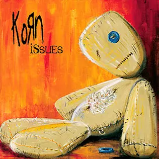
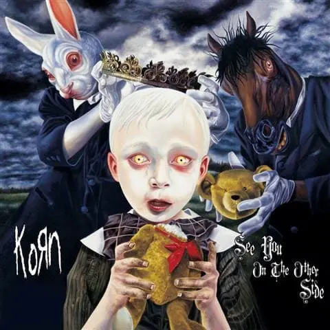
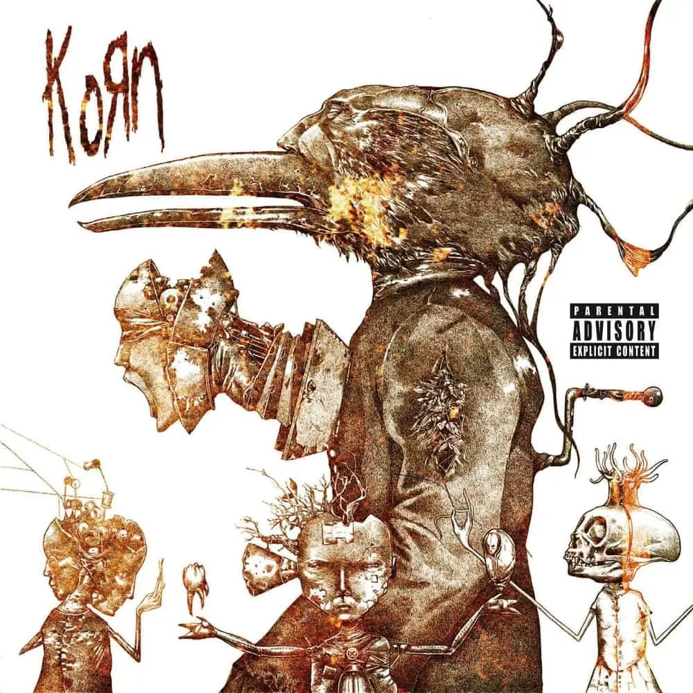
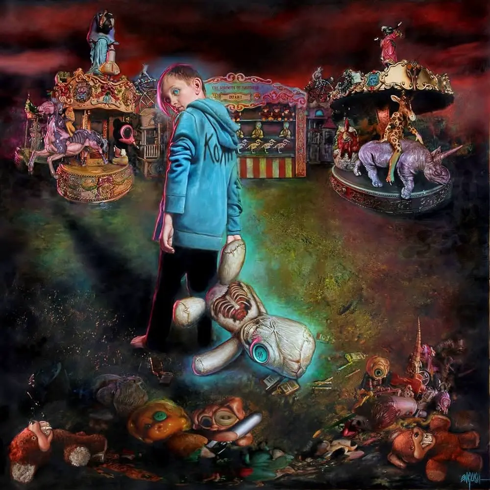

Korn — американская ню-метал-группа, основанная в США в 1993 году. Группа примечательна тем, что стала изобретателем и основателем жанра ню-метал. Коллектив до сих пор играет в этом жанре. Ниже представлены некоторые обложки пластинок от Korn.
Дебютный одноименный альбом Korn
Пластинка с преобладанием альтернативного метала
Последний альбом бывшего барабанщика
Поиск ударника, а также индастриал
Лучший альбом у коллектива в 2010-ых годах
Всего группа выпустила 14 студийных альбомов. У всех у них главным жанром является ню-метал. На некоторых пластинках добавляется альтернитивный метал, где-то грув метал, а на Untitled можно даже услышать индастриал метал.
© 2023 About Korn. Все права защищены.